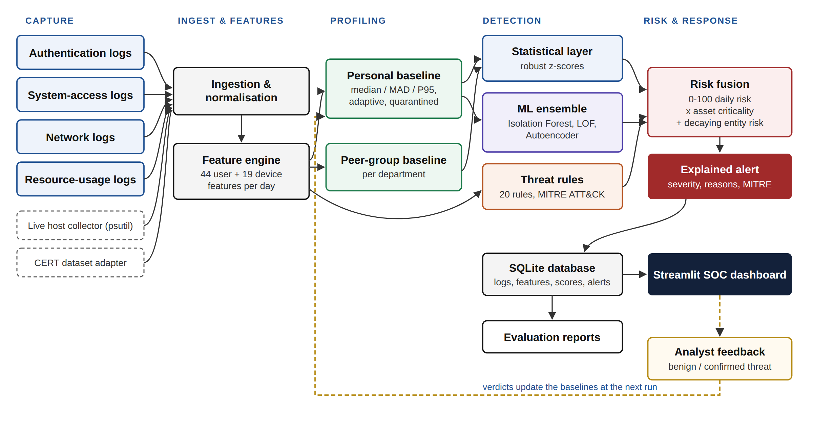
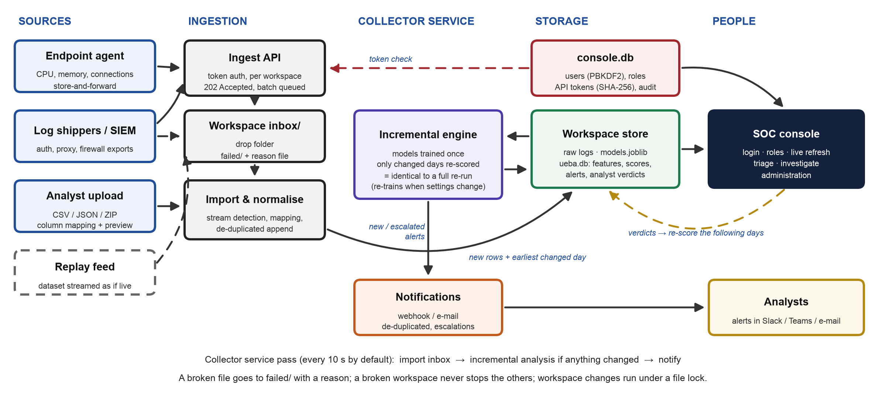
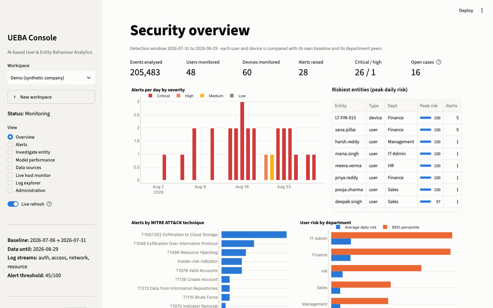
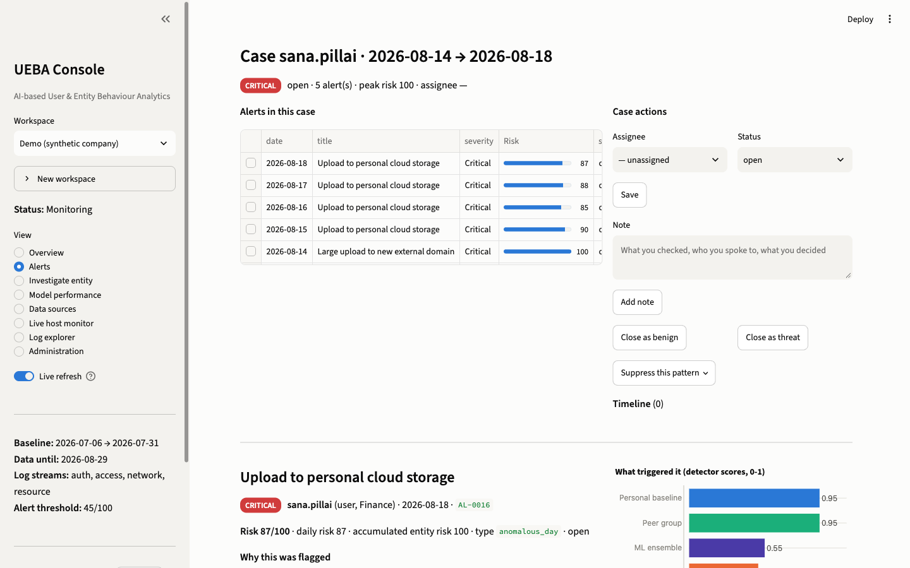
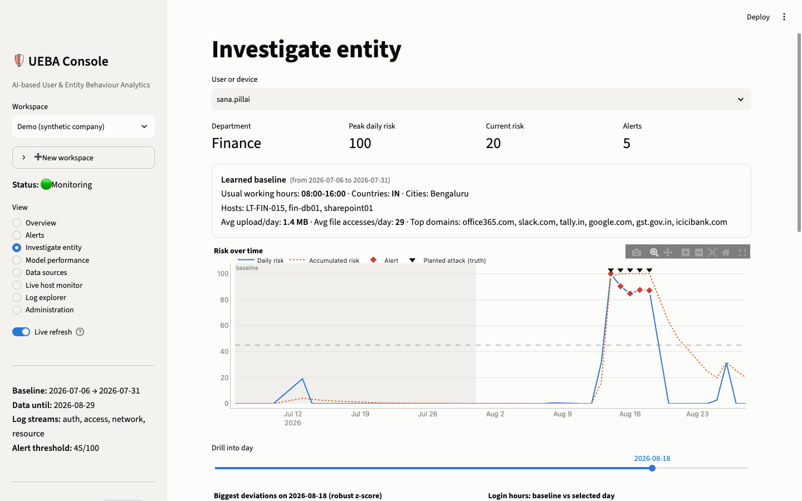
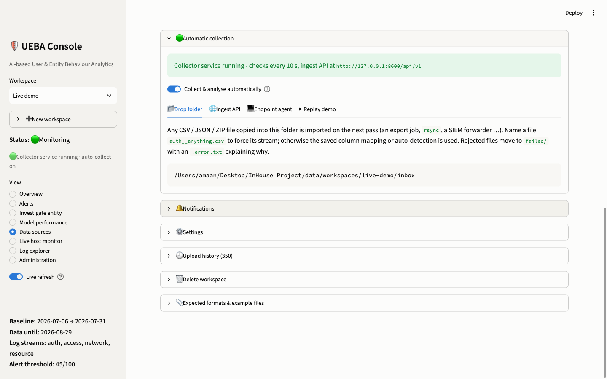

In-house project · B.Tech CSE (Cyber Security) · Alliance University
Project guide & presentation companion
AI-Based User and Entity Behaviour Analytics (UEBA) System
Learns how every user and device normally behaves, flags what is different, explains why, and runs as a
secured system a security team can operate on real logs.
Amaan Saify (2023BCSE07AED025)
Coordinator: Dr. Rathnakar Achary
Version 2 · October 2026 - covers the analytics, the operational system, the analyst workflow, security,
and validation on the CMU CERT r4.2 benchmark.
Contents
What is in this guide
Sections 1-3 tell the whole story in a few pages. Section 4 is the reference: every feature, what it
does, why it exists, how it works and where it lives in the code. Sections 5-9 prepare you for the demo and the viva.
1
The project in one page
2
Key terms you must be able to explain
3
Architecture: the analytics pipeline and the operational system
4
Feature catalogue - what, why, how, where (23 features in five groups)
5
Dashboard tour
6
Results - simulated organisation, live operation, CERT r4.2, and what did not work
7
How to run it, and the code map
8
Five-minute demo script
9
Viva questions and answers, limitations, cheat sheet
The one-sentence pitch. Stolen passwords and insiders look legitimate to signature tools; this
system learns each person's and machine's normal behaviour, needs no attack labels, raises few alerts that explain
themselves, and was tested honestly - on a simulated company it caught 11/11 attacks, and on the independent CERT
benchmark it found 22 of 36 held-out insiders after one generic addition.
Section 1
The project in one page
A Python system that watches how every user and computer normally behaves and raises a short list of
explained, risk-ranked alerts when something changes - and keeps doing so on its own.
The problem
Most breaches start with valid credentials or an insider (credential abuse is the top initial access vector in the
2025 Verizon DBIR; insider incidents cost US$17.4 M a year on average). Each log line looks legitimate, so signature
tools miss them. Behaviour gives them away - a 3 a.m. login from abroad, ninety files instead of fifteen, gigabytes to a
new site. The catch: behaviour-based tools drown analysts in false alarms and don't explain themselves.
What the system does
Captures authentication, system-access, network and resource-usage logs - by upload, drop folder,
authenticated API or an endpoint agent.
Profiles 44 features per user-day and 19 per device-day against each entity's own history and its
department, adapting over time but never learning suspicious days.
Detects deviations with three independent layers - robust statistics, an unsupervised ML ensemble
(Isolation Forest, LOF, autoencoder) and 22 MITRE ATT&CK rules - fused into one 0-100 risk score that needs
corroboration before it alerts.
Operates continuously: a collector service scores only new data with saved models (identical to a full
re-run), notifies analysts, groups alerts into cases, and the console is protected by roles and an audit trail.
Headline results
11 / 11simulated attacks caught, each on day one
0.964precision = recall = F1 (simulated)
~1 / dayalerts for 108 monitored entities
22 / 36held-out CERT insiders (3 / 36 out of the box)
Be upfront about this. The simulated company was designed together with the detector,
so 0.964 is an upper bound. On CERT r4.2, which I did not design, the out-of-the-box system found only 3 of 36 held-out
insiders; one generic indicator raised it to 22 of 36, and gradual job-seeker theft is still mostly missed. Saying this
first is a strength in a viva, not a weakness.
Section 2
Key terms you must be able to explain
If you can explain this page in your own words, you can answer most "why" questions.
Term
Plain meaning, and where it shows up here
UEBA
User and Entity Behaviour Analytics: learn normal behaviour per user and per entity (devices,
servers), flag deviations. Works without signatures, so it catches stolen credentials and insiders.
Entity-day
The unit of analysis: one user or device on one day, described by a feature vector.
Baseline / profile
What is normal for that entity: a centre (median) and a spread for every
feature, plus usual hours, countries, hosts and domains.
Robust z-score
(today - median) / spread. "How many typical spreads away from normal". Uses the
median and MAD (median absolute deviation) so one spike doesn't distort the baseline.
Peer group
The entity's department. A finance user who behaves like nobody in finance is suspicious
even if they always did it.
Unsupervised
Learning without labels: the models only ever see normal days. Labels are used only to
measure performance.
Isolation Forest
Random trees; unusual points are isolated in few splits.
LOF
Local Outlier Factor: a point in a sparse region compared with its neighbours is unusual.
Autoencoder
A neural network that compresses and rebuilds normal days (44-16-6-16-44); a day it
rebuilds badly is unusual.
MITRE ATT&CK
The public catalogue of attacker techniques (T1110 brute force, T1567 exfiltration
to cloud ...). Every rule carries its technique ID.
Precision / recall
Of the alerts raised, how many were real (precision - low means alert fatigue);
of the real attacks, how many were alerted (recall).
ROC-AUC / PR-AUC
Threshold-free ranking quality. PR-AUC matters more when attacks are rare
(~1% of days here).
Corroboration
Requiring two kinds of evidence (statistics + ML or a rule) before alerting.
Quarantine / poisoning
An attacker could slowly "teach" an adaptive baseline that the attack is
normal (poisoning). Quarantined days are never learned.
Incremental scoring
Re-using trained models and scoring only new days instead of re-training on
everything.
Held-out split
Data kept aside and never used for decisions, so results on it are honest.
Section 3
Architecture
Two views of the same system: what happens to the data (analytics), and how it runs day to day
(operation).

Analytics pipeline: capture → features → personal and peer profiles → three detection layers → risk fusion
→ explained alerts → storage, console and evaluation; analyst verdicts feed back into the baselines.

Operational system: logs arrive four ways and are queued in a workspace inbox; the collector service imports,
scores incrementally and notifies; the console reads the results; console.db holds users, token hashes and the
audit trail.
Section 4
Feature catalogue
Every feature has a reason to exist. Learn the WHY
lines - they are what examiners ask about.
The problem statement asks for them, and attacks show up in different places: brute force
in auth, theft in access and network, cryptomining in resource use.
How
Validated, normalised to one schema and merged into one event timeline; missing streams are allowed.
Upload with automatic column mapping ueba/sources.py · Data sources page
What
Drop CSV / JSON / ZIP exports; the log type is detected and columns mapped (TimeCreated → timestamp,
TargetUserName → user); preview before import; the mapping is remembered.
Why
Real logs never use our column names. Without mapping the system could only analyse its own
synthetic data.
How
Synonym lists per field, checked against the column's values (URLs, IPs, dates); values normalised (Logon Failure / 4625 → failure, CORP\alice → alice, epoch
times, CPU 0-1 → %); de-duplicated append. Linux auth.log / syslog text and Windows Security events (Event Viewer CSV, PowerShell, .evtx) are read directly; a file mixing event types is split by its type column.
Drop folder, ingest API and endpoint agent ueba/workspace.py · api.py · agent.py
What
Files copied into a workspace inbox are imported automatically; agents and log shippers POST batches to
a token-authenticated HTTP API; the agent streams a machine's CPU, memory and connections every 15 s.
Why
Nobody uploads logs by hand in production. Real data comes from export jobs, shippers and
machines, continuously.
How
The API only authenticates and queues into the inbox, so every route ends in the same import code. Bad
files go to failed/ with a reason. The agent keeps data while the server is down (store-and-forward).
Workspaces and lifecycle ueba/workspace.py
What
Independent datasets (Demo, CERT r4.2, your own) with their own logs, models, alerts and verdicts; status
No data → New data → Learning → Monitoring.
Why
Mixing organisations would corrupt baselines; and a system that alerts before it has learned
normal behaviour would only produce noise.
How
A learning period (default 30 days) must be covered before alerts start; changes run under a file lock.
Replay as a live feed ueba/replay.py
What
Streams a dataset into a workspace: 30 days of history, then one day every few seconds.
Why
To demonstrate and test the live system end to end - alerts appear as attacks happen.
B · Detection
Behavioural features (44 user, 19 device) ueba/features.py
What
Daily counts such as failed logins, failures in 10 min followed by success, logins at hours rare for
this user, new hosts / countries / domains, impossible travel, MB to new or cloud domains, USB use, CPU hours above 85%.
Why
Models can't read raw log lines; daily aggregates are cheap, private (metadata only) and
explainable ("12 failed logins vs usual 1").
How
"New" and "unusual hour" are computed only from earlier days (causal) - exactly what a live system sees.
Personal and peer baselines ueba/profiles.py
What
Median and spread per feature for each entity and each department.
Why
"Unusual" only means something relative to a person's own normal; peers catch someone who
was always odd for their role.
How
spread = max(1.4826·MAD, (P95 - median)/1.645, floor). The P95 term respects personal peaks (a monthly
60 MB report) - it removed most false positives.
Adaptive baseline with quarantine ueba/pipeline.py
What
Profiles are rebuilt daily from the last 45 accepted days.
Why
People change jobs and habits (stale baselines raise false alarms), but an attacker must not
be able to teach the model that the attack is normal.
How
Days with risk ≥ 60, any rule hit, or a confirmed-threat verdict are never learned; days an analyst clears
as benign always are.
Three detection layers ueba/detectors.py
What
Statistics (largest z-scores above 3), an unsupervised ML ensemble (Isolation Forest, LOF, autoencoder)
trained on normal days only, and 22 rules mapped to ATT&CK.
Why
They fail differently: statistics explain, ML finds patterns nobody wrote a rule for, rules are
precise for known techniques. No labels are needed - real organisations don't have them.
How
Each ML score is calibrated so 1.0 = the 99th percentile of normal, then averaged.
Rule R16 - removable media without history ueba/detectors.py
What
USB use by an account that never used removable media in its learning period (T1052.001).
Why
Added after CERT showed quiet insiders slip through; a standard insider indicator. Chosen on a
development half only; raised held-out detection from 3/36 to 22/36; never fires on the simulated company.
Risk fusion and corroboration ueba/risk.py
What
A = 1 - (1-0.28·stat)(1-0.10·peer)(1-0.30·ml)(1-rules); daily risk = 100·min(1, A·criticality).
Why
One number to rank by, weighted by impact (admins, servers ×1.3). The threshold 45 is above
what statistics alone can reach (43.8), so an alert always needs ML or a rule to agree - this raised precision
from 0.31 to 0.96.
How
Behaves like a probabilistic OR: one strong signal or several weak ones raise risk; never above 100.
Accumulated risk ueba/risk.py
What
entity risk(t) = entity risk(t-1)·0.5^(days/3) + max(0, daily risk - 15); a "sustained risk" alert at 60.
Why
Catches attackers who stay a little suspicious for several days without one alarming day.
Plain-English explanations ueba/detectors.py
What
"3,300 MB uploaded vs usual 1.2 (2750× usual) - also unusual vs peers", layer scores and ATT&CK IDs on
every alert.
Why
Analysts mistrust scores they can't reason about; an explained alert is closed or escalated in
seconds.
C · Running continuously
Incremental engine ueba/pipeline.py
What
Models are trained once and saved; later analyses score only the days from the earliest changed day.
Why
Re-training on all history at every update doesn't scale, and would silently change past scores.
How
Because every feature is causal, the result is identical to a full re-run - an automated test cuts
the data at a day boundary and mid-day and checks. Saved models carry a fingerprint of the settings; changing
settings, the user directory or the learning period triggers re-training automatically.
Collector service ueba/service.py · launch.py
What
Every 10 s: import the inbox → incremental analysis if anything changed → notify. Writes a heartbeat the
console shows.
Why
Detection only helps if it happens without someone clicking "analyse".
How
One broken file or workspace never stops the others; ~2-3 s per update.
Notifications ueba/notify.py
What
Webhook (Slack, Teams, Discord, any JSON endpoint) or e-mail for new or escalated alerts.
Why
Nobody watches a dashboard all day.
How
Each alert sent once (again only if it escalates); closed alerts and imported history stay quiet; every
attempt logged.
D · Analyst workflow
Cases ueba/cases.py · Alerts page
What
Alerts on one entity within 7 days form one case with status, assignee and a notes timeline.
Why
An analyst should handle a person once, not 30 times; on CERT, 424 alerts became 195 cases.
How
Closing a case records a verdict for every day it covers, so the baseline learns or quarantines them.
Verdicts that teach the system ueba/feedback.py
What
Benign / threat on an alert or a case.
Why
The same legitimate behaviour shouldn't be flagged again; a confirmed attack must never become
"normal".
How
The days after a verdict are re-scored automatically with the corrected baseline.
Suppression ueba/cases.py
What
Silence one alert type for one entity (or everyone) until an expiry date, with a required reason.
Why
Known patterns (a night-shift backup admin) cause alert fatigue; on CERT one habit produced
91 alerts for one user.
How
Suppressed alerts are still computed and kept, hidden and never notified; audited; can be lifted.
Investigation, performance and log pages dashboard/views/
What
Entity page (learned baseline, risk timeline, biggest deviations, event timeline); model performance
with a what-if threshold; per-workspace alert threshold; log explorer with CSV export; live refresh.
Why
Context in one place makes triage fast; each organisation must tune its own threshold
(CERT proved it).
E · Securing the tool itself
Accounts, roles and passwords ueba/auth.py · login view
What
Viewer (read), analyst (+ verdicts, cases), administrator (+ data, settings, users, tokens); users can
change their own password.
Why
The console holds an organisation's security logs - it is itself a target.
How
PBKDF2-HMAC-SHA256 (310,000 iterations, salt per user), constant-time compare, generic error messages,
lock-out after 5 failures for 15 min, 8-hour sessions.
API tokens and the audit trail ueba/auth.py · Administration page
What
256-bit tokens shown once, stored only as SHA-256, scoped to one workspace, revocable; every login,
failed login, verdict, upload, setting, user and token change is recorded.
Why
Agents must authenticate without sharing a user's password; actions on security data must be
accountable.
Console and API listen on this machine only; a team deployment goes behind a TLS reverse proxy.
Why
Streamlit would otherwise be reachable by anyone on the same Wi-Fi.
Section 5
Dashboard tour
Eight pages, ordered the way an analyst works. Each workspace shows its status and the collector
service's health in the sidebar.

Overview - events, entities, alerts, open cases, alerts per day (weekly for long periods), riskiest entities,
ATT&CK coverage, risk by department.

Alerts → Cases - the slow insider's five daily alerts as one case: assign, set status, add notes, close as
benign or threat, suppress a pattern; the explained alert below.

Investigate entity - learned baseline (hours, countries, hosts, volumes), risk over time with alerts and the
labelled attack days, then a drill-down into any day.

Data sources → Automatic collection - service status, the drop folder, the ingest API, the agent and replay
commands; notifications and settings below.
Page
Use it to
Model performance
See precision / recall / ROC with a what-if threshold; apply a new threshold
Live host monitor
Take a one-off sample of this machine (the agent does it continuously)
Log explorer
Browse any raw stream by user, device and date; export CSV
Administration
Users and roles, API tokens, audit log, service health (administrators only)
The one false positive is a planted harmless oddity (a new project, risk 49); the one false negative is the pivot
laptop of the lateral movement (43.6, just below 45). Rules alone score F1 0.982 only because they were written for these
attack types - the behavioural layers reach 0.857 without knowing the attacks.
Live operation
Incremental updates gave identical scores and alerts to a full re-run (cut at a day boundary and mid-day).
Replaying the company through the API: 2 trainings + 29 incremental updates of 1.6-3.2 s, no errors, 11/11 incidents and
F1 0.964 - the same as the batch run.
(a) The statistical and ML layers
rank CERT days barely above chance - they ignore small deviations. (b) Insiders found for a daily review budget.
What did not work - and why that's fine to say. A 7-day trend layer for gradual insiders
raised ROC-AUC by ~0.1 but either caught nobody new at ~1 alert a day, or caught half the job seekers at 11× the alerts,
and it made the analysts' top-5 list worse. It was rejected using the development half only. Gradual insiders need
sequence models (LSTM, graph-sequence work in the literature review).
Section 7
How to run it, and the code map
python3 -m venv .venv && source .venv/bin/activate && pip install -r requirements.txt
python run_pipeline.py # build the demo company and analyse it (~30 s)
python launch.py # console on http://localhost:8501 + collector service + ingest API
python -m ueba.replay --workspace live-demo --labels # stream the company live into a workspace
python -m ueba.agent --url http://127.0.0.1:8600 --workspace lab --token ueba_...
python run_pipeline.py --cert data/cert/r4.2 # CERT benchmark into its own workspace (~8 min)
python experiments.py · experiments_cert.py · experiments_trend.py # robustness / CERT / trend experiments
python -m pytest -q # 32 tests
Collector service; ingest API; endpoint agent; live replay
ueba/cases.py · feedback.py · notify.py
Cases and suppressions; verdicts; webhook / e-mail
ueba/auth.py
Users, roles, password hashing, API tokens, audit log
ueba/cert_loader.py · evaluate.py
CERT adapter; metrics, figures, reports
dashboard/app.py · ui.py · views/
Console shell; per-session context; one module per page
tests/
32 tests: detection, ingestion, incremental equivalence, API, security, cases, service
Section 8
Five-minute demo script
Before the viva: run python launch.py, sign in, create a workspace "Viva live", add a webhook
(e.g. a webhook.site URL open on your phone), and keep a terminal ready with
python -m ueba.replay --workspace viva-live --seconds-per-day 8 --labels.
Time
Show
Say
0:00
Sign-in screen
"A security tool must be secure itself - roles, hashed passwords,
lock-out, and everything is audited."
0:30
Demo → Overview
"A simulated 48-person company, 205k events, 11 attacks and 4
harmless oddities. All 11 caught on day one, one false alert in 30 days."
1:15
Alerts → Cases → sana.pillai
"Five daily alerts of a slow insider are one case.
Every alert explains itself, and statistics alone can never alert - ML or a rule must agree."
2:00
Investigate →
"Her learned baseline, the risk timeline, and exactly what deviated."
2:30
Start the replay; open Viva live
"Now as a live system - history arrives, it learns,
then a day every 8 seconds. Nobody clicks anything."
3:30
INC-01 appears; phone buzzes
"Brute force from Tor - detected and notified within
one service pass. Models were trained once; each update scores only new data, provably identical to a full re-run."
4:15
CERT figure
"On CMU's benchmark, which I didn't design: 3 of 36 out of the box; one
generic indicator chosen on a separate half - 22 of 36. Job-seekers are still mostly missed; that's my future work."
4:45
Data sources → Automatic collection
"Real logs come in by upload with automatic
mapping, a drop folder, an authenticated API, or the agent."
Section 9
Viva questions and answers
Short answers you can say in 20-30 seconds. Understand them; don't recite them.
Why unsupervised, not a classifier?Real organisations have almost no labelled attacks, and the
next attack is not like the last one. The models learn only normal behaviour; labels are used only to measure.
Your results come from data you generated - isn't that circular?Yes, it's the main limitation.
That's why I ran CERT, which CMU built: 3/36 out of the box, 22/36 with one generic indicator chosen on a separate half.
The synthetic 0.964 is an upper bound.
Isn't adding R16 after seeing CERT tuning on the test set?I split the users first, chose R16 on the
development half (4 → 17) and quote the untouched test half (3 → 22). It's a standard indicator and never fires on
the synthetic data. The out-of-the-box number is reported as the generalisation result.
Rules alone score 0.98 - why the ML?Because I wrote those rules for the attacks I also simulated.
Without rules the behavioural layers still reach F1 0.857 with no knowledge of the attacks.
Can an attacker poison the baseline?Risky days (≥ 60), rule hits and confirmed threats are never
learned; the ML models are trained once on the learning period.
Why median and MAD, not mean and standard deviation?One legitimate spike would inflate a standard
deviation and hide the next anomaly; the median ignores outliers, and the P95 term respects personal peaks.
How is incremental scoring correct?All features are causal, so a day's score never depends on later
data; the engine reuses saved models and earlier accept / quarantine decisions and re-scores from the first changed
day. A test checks equality with a full re-run.
Why so much worse than published CERT results?Those models use labels or per-session sequences; mine
uses no labels, daily aggregates, and thresholds calibrated elsewhere. The fix is per-organisation calibration and
sequence-aware scoring.
How do you avoid alert fatigue?Corroboration threshold, explanations, cases instead of repeated
alerts, suppression with expiry, notifications only for new or escalated alerts.
What would a real deployment need?TLS via a reverse proxy, the service as a system service, native
EVTX / syslog parsers, PostgreSQL at scale, and SOAR for automated response.
Limitations to state before they are asked
Quiet, gradual insiders (CERT scenario 2) are mostly missed; the behavioural layers ignore small deviations.
Synthetic results are an upper bound; real logs are messier.
Daily granularity: alerts within seconds of data arriving, but no intra-day sequence detection.
The agent can't measure bytes per connection; upload volumes should come from proxy / firewall logs.
Cheat sheet. 205,483 events · 108 entities · 44 + 19 features · 3 layers · 22 rules ·
threshold 45 (stats max 43.8) · precision 0.964 · F1 0.951 over 5 seeds · 0.857 without rules · CERT 3 → 22 of 36 ·
~1 alert/day · update 2-3 s · 32 tests.